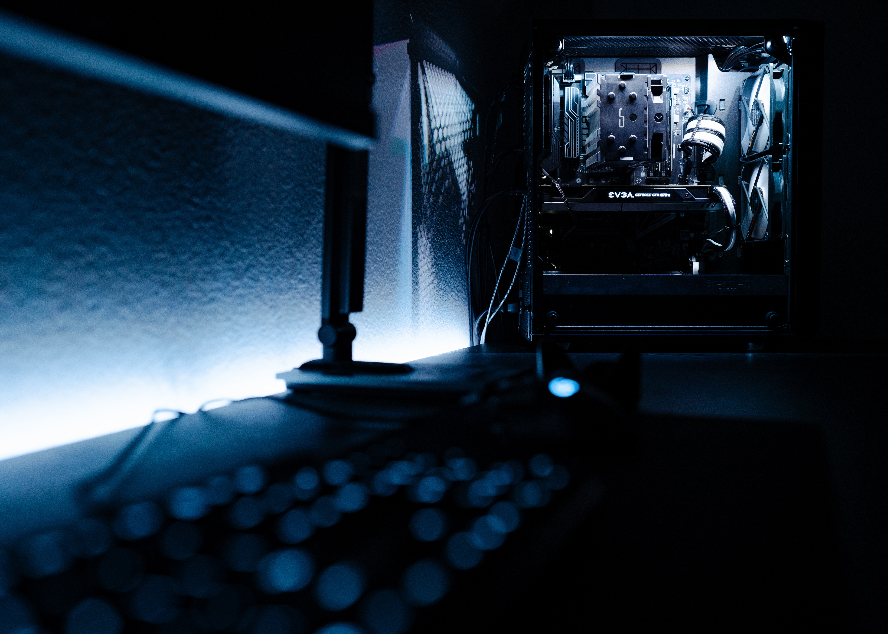

Nuestras metas
Brindar soporte eficiente y oportuno:
La meta principal de una mesa de ayuda es proporcionar un servicio de soporte técnico eficiente y oportuno a los usuarios. Esto implica responder rápidamente a las solicitudes de ayuda, resolver los problemas de manera efectiva y garantizar la satisfacción del usuario.

Mejorar la satisfacción del usuario:
Se busca asegurar que los usuarios estén satisfechos con los servicios proporcionados por la mesa de ayuda. Esto implica mantener altos niveles de calidad en la atención al cliente, ser amigable y profesional en la comunicación con los usuarios, y resolver sus problemas de manera satisfactoria.

Reducir los tiempos de resolución:
Una meta importante es reducir los tiempos de resolución de los incidentes y solicitudes de soporte. Esto se logra mediante la implementación de buenas prácticas en la gestión de incidentes, el uso de herramientas y tecnologías eficientes, y la capacitación constante del personal de la mesa de ayuda.
Mejorar la comunicación y la documentación:
Se busca establecer una comunicación clara y efectiva con los usuarios, brindando instrucciones y soluciones claras a sus problemas. Además, se pretende mantener una documentación actualizada de los problemas comunes, soluciones y procedimientos, para agilizar la resolución de futuros incidentes.

Implementar métricas de rendimiento:
Se establecen indicadores de rendimiento y se realizan seguimientos para evaluar la eficiencia y efectividad de la mesa de ayuda. Esto incluye métricas como el tiempo de respuesta, el tiempo de resolución, la satisfacción del usuario y la calidad del servicio.

Fomentar la mejora continua:
La mesa de ayuda busca identificar áreas de mejora y realizar acciones para optimizar sus procesos y servicios. Esto implica recibir y considerar el feedback de los usuarios, evaluar y actualizar constantemente las políticas y procedimientos, y buscar oportunidades para la capacitación y el desarrollo del personal.

Preguntas frecuentes
¿Cómo puedo contactar a la mesa de ayuda?
Puedes contactarnos de las siguientes maneras: a través de nuestro número de teléfono de soporte, enviando un correo electrónico a nuestra dirección de correo electrónico de soporte.
¿Cuál es el horario de atención de la mesa de ayuda?
Nuestro horario de atención es de lunes a viernes de 7:00 a.m. a 2:00 p.m. Estamos cerrados los fines de semana y días festivos.
¿Qué tipo de problemas o consultas puedo reportar a la mesa de ayuda?
Puedes reportar cualquier problema relacionado con hardware, software, redes, conectividad, cuentas de usuario, acceso a sistemas y cualquier otra cuestión técnica que necesites resolver.
¿Cuál es el tiempo de respuesta esperado para mi solicitud de soporte?
Nuestro objetivo es responder a todas las solicitudes de soporte dentro de un plazo máximo de 24 horas hábiles. Sin embargo, algunos casos urgentes pueden recibir una respuesta más rápida.
¿Qué información debo proporcionar al reportar un problema?
Para ayudarnos a resolver tu problema de manera más eficiente, por favor proporciona una descripción detallada del problema, incluyendo cualquier mensaje de error, pasos para reproducir el problema y cualquier otra información relevante.
¿Qué debo hacer si no estoy satisfecho con la resolución de mi problema?
Si no estás satisfecho con la resolución proporcionada, por favor comunícate con nosotros nuevamente y proporciona detalles adicionales. Haremos todo lo posible para resolver tu problema de manera satisfactoria.
¿Ofrecen capacitación o documentación para ayudarme a resolver problemas comunes por mí mismo?
Sí, ofrecemos capacitación y documentación en nuestro portal en línea. Podrás encontrar tutoriales, guías paso a paso y preguntas frecuentes que te ayudarán a resolver problemas comunes por ti mismo.
Valores de la Mesa de ayuda
Excelencia en el servicio:
Brindar un servicio de calidad, enfocado en la satisfacción del usuario. Atender sus necesidades de manera rápida, amigable y profesional, buscando superar sus expectativas.

Empatía:
Comprender y ponerse en el lugar del usuario. Escuchar activamente, demostrar interés genuino y tratar a cada usuario con respeto y cortesía. Mostrar empatía hacia sus preocupaciones y dificultades.

Profesionalismo:
Mantener altos estándares de conducta profesional en todas las interacciones con los usuarios. Ser confiable, puntual y ético en la gestión de las solicitudes de soporte.

Colaboración y trabajo en equipo:
Fomentar la colaboración y el trabajo en equipo dentro de la Mesa de Ayuda. Compartir conocimientos y experiencias, y trabajar en conjunto para resolver los problemas de manera eficiente.

Comunicación clara y efectiva:
Establecer una comunicación clara y efectiva con los usuarios. Explicar de manera comprensible los pasos a seguir, brindar instrucciones claras y mantener una comunicación abierta y transparente.

Orientación al usuario:
Colocar al usuario en el centro de todas las acciones y decisiones. Entender sus necesidades y adaptar los servicios de la Mesa de Ayuda para satisfacerlas de manera efectiva.
Mejora continua:
Buscar constantemente la mejora en los procesos, servicios y habilidades del personal de la Mesa de Ayuda. Aprender de las experiencias y comentarios de los usuarios para implementar mejoras y ofrecer un servicio cada vez más eficiente.

Resolución de problemas:
Enfocarse en la resolución efectiva de los problemas de los usuarios. Buscar soluciones innovadoras y eficientes, aprovechando las mejores prácticas y herramientas disponibles.

Confidencialidad:
Garantizar la confidencialidad y privacidad de la información de los usuarios. Cumplir con las políticas y regulaciones de protección de datos para mantener la confianza y seguridad de los usuarios.

Adaptabilidad:
Ser flexible y adaptarse a las necesidades cambiantes de los usuarios y las tecnologías. Estar dispuesto a aprender y actualizarse constantemente para brindar un servicio de vanguardia.

Contactanos
¡Estamos aquí para ayudarte! Si necesitas soporte técnico o tienes alguna consulta, puedes contactarnos de las siguientes maneras:
Teléfono de Soporte: Llama a nuestro número de teléfono de soporte al;
411-111-2030.
Nuestro equipo de expertos estará disponible para brindarte asistencia y resolver tus problemas técnicos.
Correo Electrónico: Envía un correo electrónico a nuestra dirección de correo electrónico de soporte;
leslieanahiortegap21@cbtis172.edu.mx
. Describe detalladamente tu problema o consulta y asegúrate de incluir información relevante, como mensajes de error o capturas de pantalla, para que podamos ayudarte de manera efectiva.Recuerda que nuestro equipo de soporte técnico está disponible de 7:00 am a 2:00 pm para atender tus solicitudes. Si nos contactas fuera de este horario, te responderemos lo antes posible en el próximo día hábil.
Estamos comprometidos en brindarte un servicio de calidad y resolver tus problemas de manera eficiente. No dudes en comunicarte con nuestra Mesa de Ayuda, estaremos encantados de asistirte.
Misión
La misión de nuestra mesa de ayuda es garantizar que los usuarios puedan utilizar los sistemas y dispositivos de manera efectiva y sin interrupciones. Nos comprometemos a brindar un servicio de calidad, respondiendo de manera oportuna y eficiente a las consultas y solicitudes de los usuarios. Nuestro objetivo es facilitar el acceso y el uso adecuado de las herramientas tecnológicas, asegurando que los usuarios estén capacitados y se sientan respaldados en todo momento.
Nuestro equipo de profesionales altamente capacitados está dedicado a resolver los problemas técnicos de manera efectiva, ofreciendo soluciones personalizadas y adaptadas a las necesidades de cada usuario. Valoramos la comunicación clara y efectiva, y nos esforzamos por explicar los conceptos técnicos de manera comprensible, evitando el uso de tecnicismos innecesarios.
Además, nuestra mesa de ayuda se compromete a mantenerse actualizada sobre las últimas tendencias y avances tecnológicos, para poder brindar asesoramiento y soporte de vanguardia. Estamos constantemente mejorando nuestros conocimientos y habilidades, participando en capacitaciones y certificaciones relevantes para garantizar un servicio de calidad y estar preparados para los desafíos técnicos que puedan surgir.
Visión
Nuestra visión para nuestra mesa de ayuda es brindar un servicio de atención al cliente excepcional en el área de la tecnología. Queremos resolver los problemas de manera rápida y eficiente, satisfaciendo las necesidades de nuestros usuarios.
Nuestro objetivo principal es convertirnos en el mejor equipo de soporte técnico, proporcionando una experiencia de usuario inigualable. Queremos que nos reconozcan por nuestra habilidad para solucionar los problemas de forma efectiva, ayudando a nuestros usuarios con los desafíos técnicos que enfrenten.
Para lograr esto, nos comprometemos a tener un equipo altamente capacitado y actualizado en las últimas tecnologías. Nuestros técnicos están aquí para ayudar y responder de manera clara y sencilla a las preguntas de los usuarios.